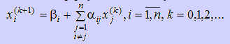
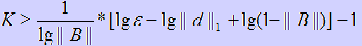
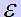
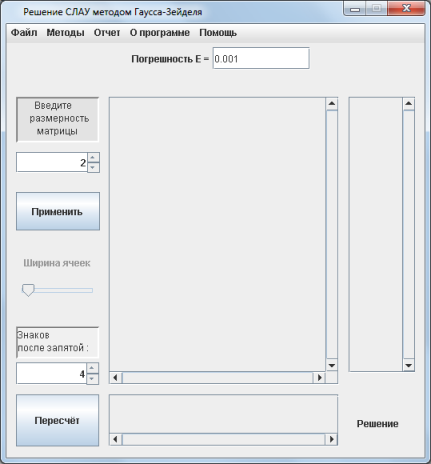
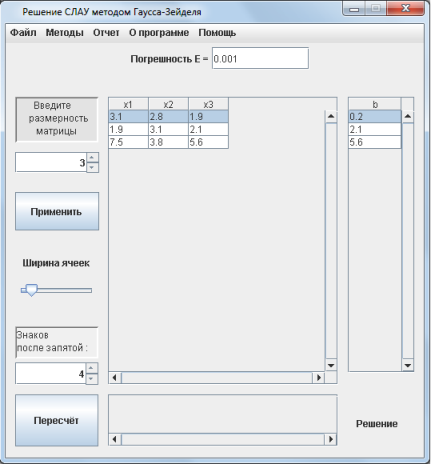
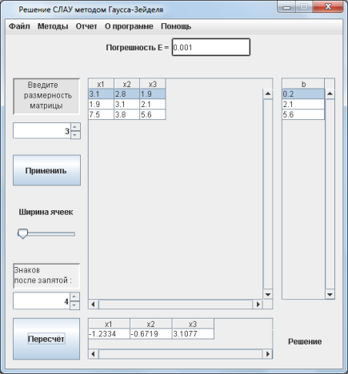
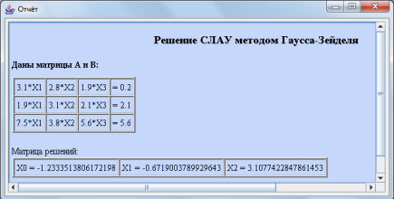

Решение СЛАУ методом Гаусса-Зейделя
Практическая часть
Теоретическая часть
При решении СЛАУ итерационным методом вычислительные формулы имеют следующий вид
Из данной формулы видно, что в методе простой итерации для получения нового значения вектора решений на (i+1)-ом шаге используются значения переменных, полученные на предыдущем шаге.
Более быструю сходимость метода простых итераций можно обеспечить, если для каждой i-ой компоненты вектора решения (k+1) приближения использовать предыдущие компоненты от 1 до i–1 также (k+1) приближения, а остальные компоненты от i до n используются от предыдущего k-го приближения. Такая модификация метода простых итераций носит название «метода Зейделя». Запишем рабочие формулы метода Зейделя для каждой компоненты:

Количество итераций, за которые метод Гаусса-Зейделя сходится, зависит от необходимой точности. Оно вычисляется по формуле:

где  - это необходимая точность, а К - число итераций, необходимых для решения СЛАУ с заданной точностью
Практическая часть
Пошаговые действия |
Пояснения к действиям |
 |
1. Заходим в программу. Появляется окно, показанное на рисунке. Выбираем категорию методов "Методы линейной алгебры". Выбираем метод "Решение СЛАУ методом Гаусса-Зейделя". Нажимаем кнопку "PUSH". |
|  | 2. Появляется окошко, показнное на рисунке слева. В соответсвующем поле вы задаете размерность матрицы. В поле "Погрешность Е" вы задаете необходимую вам для решения точность, от которой зависит число итераций. В поле "Знаков после запятой" вы задаете то количество цифр после запаятой, какое хотите видеть в корнях СЛАУ, полученных при решении. После чего необходимо нажать кнопку "Применить". |
|  | 3. На следующем этапе появляется таблица для ввода коэффициентов при неизвестных. Можно выбрать ширину ячеек таблицы для наглядности. Название столбцов подсказывает нам какие ячейки соответствуют коэффициентам при неизвестных. В столбец b, расположенный на экранной форме слева, вводятся соотвествующие правые части уравнений. После того, как все данные были введены нужно нажать кнопку "Пересчет". |
|  | 4. После выполнения всех действий, описанных выше, внизу экранной формы в поле "Решение" появится таблица с найденными кормнями заданной системы линейных уравнений. |
|  | 5. После того, как вы получили ответ, можно просмотреть отчет, где предоставлено поэтапное решение. Для этого необходимо в главном меню программы, расположенном на верху экранной формы выбрать пункт "Отчет/Просмотр отчета". Вы увидите окно, расположенное слева. Также можно сохранить этот отчет нажав кнопку главного меню "Отчет/Сохранить отчет". |
 |
6. Если решение примера может пригодится вам в будущем, вы можете сохранить его с помощью конпки меню "Файл/Сохранить". В окне, которое появится(оно показано на рисунке слева) необходимо выбрать папку, в которую он сохранится и написать название. |